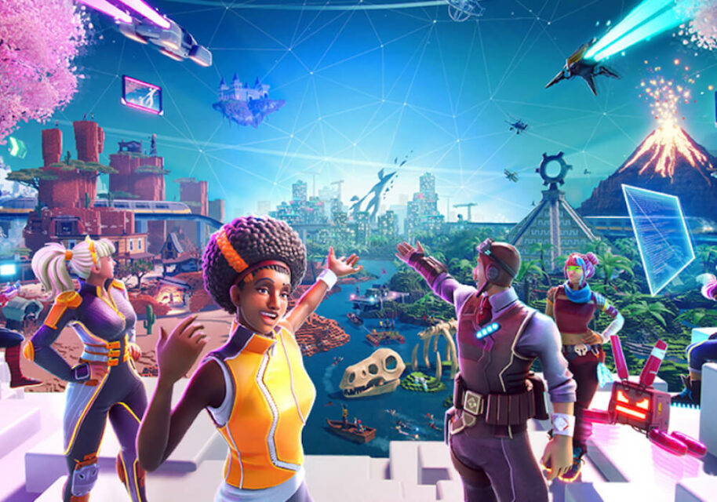

Are We in the Metaverse Yet?
Or in other word :
Is the Metaverse exist Now?
Crypto people say they’re building it. Gamers might already be living in it. The art world is cashing in on it. Web veterans are trying to save it. But what is it?

The biggest ideas in tech often lurch into the lexicon before they are truly coherent. Jargon appears out of nowhere, underexplained and overused: the internet of things, the sharing economy, the cloud.
In some rare cases, the terminology sticks. A lot of people talk a lot about a lot of loosely related things, and then those things merge into a single semi-comprehensible thing. Then we live our lives within that thing forever. Remember hearing about “the internet”? Get ready for “the metaverse.”
The term comes from digital antiquity: Coined by the writer Neal Stephenson in his 1992 novel, “Snow Crash,” then reimagined as the Oasis in the Ernest Cline novel “Ready Player One,” it refers to a fully realized digital world that exists beyond the analog one in which we live.
In fiction, a utopian metaversemay be portrayed as a new frontier where social norms and value systems can be written anew, freed from cultural and economic sclerosis. But more often metaverses are a bit dystopian — virtual refuges from a fallen world.
As a buzzword, the metaverse refers to a variety of virtual experiences, environments and assets that gained momentum during the online-everything shift of the pandemic. Together, these new technologies hint at what the internet will become next.
Video games like Roblox and Fortnite and Animal Crossing: New Horizons, in which players can build their own worlds, have metaverse tendencies, as does most social media. If you own a non-fungible token or even just some crypto, you’re part of the metaversal experience. Virtual and augmented reality are, at a minimum, metaverse adjacent. If you’ve attended a work meeting or a party using a digital avatar, you’re treading into the neighborhood of metaversality.
Founders, investors, futurists and executives have all tried to stake their claim in the metaverse, expounding on its potential for social connection, experimentation, entertainment and, crucially, profit.
Matthew Ball, a venture capitalist and prolific essayist, describes the metaverse not as a virtual world or a space, but as “a sort of successor state to the mobile internet” — a framework for an extremely connected life. There “will be no clean ‘Before Metaverse’ and ‘After Metaverse,’” he writes. “Instead, it will slowly emerge over time as different products, services and capabilities integrate and meld together.”
Speaking to CNET in May, Mark Zuckerberg shared his own Facebook-centric view: “We want to get as many people as possible to be able to experience virtual reality and be able to jump into the metaverse and to have these social experiences within that,” he said, referring to the company’s experimental virtual reality environment, Horizon, which he hopes people will explore using Facebook’s Oculus headsets.
In a June interview with VentureBeat, Jensen Huang, the chief executive of Nvidia, which makes computer chips, shared more of a vibe than a vision: “We’ll be able to almost feel like we’re there with each other.”
If all that sounds too heady, for now this might do: The metaverse is the internet, but so much more. And though it may still be in the future, if it materializes at all, it seems closer than it’s ever been.
Roblox, a platform where independent developers create games popular with children, has been described as a metaverse.
A World Built on Blockchain
Earlier this year, in the midst of a crypto boom, the price of a currency called MANA began climbing the charts in Coinbase, a popular exchange for digital currencies.
MANA is the currency of a virtual world called Decentraland, where in March plots of digital land were going for the equivalent of hundreds of thousands of dollars. (After two years bouncing around 10 cents, MANA briefly broke $1.60 in April, pushing the combined value of all the tokens past $2.4 billion.)
By size, Decentraland is more of a commune — as of July, just a few hundred people are logged in at a time, down from a March peak in the low thousands — made up of user-generated NFTs. Its creators have described the platform less as a place than as infrastructure upon which to build a place. (Decentraland’s currency and land contracts run on the Ethereum blockchain.)
Denizens of Decentraland are constantly creating scenes and experiences for other users, like concerts and art exhibits. There are casinos where you can gamble in MANA, with croupiers who are paid in MANA to show up for work. The sense that Decentraland is a work in progress pervades the sparsely populated grid of half-developed plots and themed zones. Between events, users are mostly left to wander and wonder: What now?
Speculators seem less confused; after all, Decentraland is first and foremost an experiment in scarce digital property. This month, Republic Realm, which calls itself a “digital real estate firm,” purchased an NFT of a 259-parcel virtual estate in Decentraland for more than 1.2 million MANA, or, at contemporaneous exchange rates, more than $900,000.
Sotheby’s, which acquired a small plot in Decentraland’s arts district and constructed a replica of its London galleries, recently closed its first show in the metaverse. Michael Bouhanna, who ran the sale, estimated that 90 percent of the galleries’ 3,200 visitors had little sense of what Sotheby’s is or does, but said the exercise was useful for helping existing customers conceptualize NFTs, which the auction house is already selling.
What separates Decentraland from its predecessors like Second Life, a virtual world owned and operated by a private company called Linden Labs, is that it is indeed fairly decentralized. The plan, according to Decentraland’s founders, was always for its users to take ownership of the world, building and doing what they please.
By contrast, Dave Carr, a spokesman for the Decentraland Foundation, said, “Fortnite is a centralized experience,” meaning that it functions top-down, with major decisions coming from its developer, Epic Games. “Here, you feel like you have a definite part in it.”
‘More Than a Game’
When Epic was developing Fortnite, its plan was not to create a metaverse. But what started in 2017 as a tower defense-style game where players fought zombies exploded, just a year later, into an international phenomenon.
As millions of players flocked to Fortnite Battle Royale, a game mode that is a bit like “The Hunger Games,” the company rushed to add social features, like voice chatting and dance parties. In financial documents made public in federal court in May as part of an antitrust suit against Apple, Epic said Fortnite made more than $9 billion in revenue in 2018 and 2019 combined. Players spend money to dress up their characters in superhero costumes and banana suits.
Now, Epic markets Fortnite as not just an interactive experience but as a metaverse.
“It’s more than a game,” Matthew Weissinger, the vice president of marketing at Epic, said in court. “We’re building this thing called the metaverse — a social place.”
A Travis Scott concert held within Fortnite last April drew more than 12 million concurrent views, the company said. And nearly 50 percent of players are using the game’s creative mode, which allows users to populate their own islands with buildings and games, said Tim Sweeney, the chief executive of Epic.
For Mr. Sweeney, the formation of the metaverse also entails a fight for its independence. Without specifically referring to Epic’s lawsuit against Apple, which is set to be decided in the next few months, he alluded to it several times.
Defining the metaverse was difficult, he said, but he knew what it was not: “The metaverse is not an App Store with a catalog of titles,” Mr. Sweeney said. “In the metaverse, you and your friends and your appearance and cosmetics can go from place to place and have different experiences while remaining connected to each other socially.”
Could it be possible one day to have a tunnel from Roblox to Fortnite and other games, connecting them all in some sort of futuristic world? Mr. Sweeney said yes.
There are millions of games created on Roblox each year. Here, a shot of the prison-escape game Mad City.
Minting Teenage Millionaires
Roblox, a platform where independent developers create games popular with children, may be the nearest and most expansive vision of the metaverse.
In the first quarter of 2021, people spent nearly 10 billion hours playing Roblox, according to the company’s earnings report, and more than 42 million users logged in each day. Players also spent $652 million on the site’s virtual currency, Robux, which can be used to purchase hats, weapons, hot air balloons and other digital items for their characters. After going public on March 10, the company’s valuation shot to $45 billion; as of this week, it’s closer to $50 billion.
Dave Baszucki, Roblox’s co-founder and chief executive, whose shares in the company were suddenly worth $5.5 billion when the market closed that day, expressed his appreciation on Twitter.
Mr. Baszucki declined to be interviewed for this article, but he has spoken widely and ambitiously about Roblox as a metaverse. He has said his goal is to reach billions of people with Roblox, not just children. At an investor presentation in February, he said the company holds its business meetings on the platform.
“Just as the mail, the telegraph, the telephone, text and video are utilities for collaborative work, we believe Roblox and the metaverse will join these as essential tools for business communication,” Mr. Baszucki said. “Ultimately, someday we may even shop within Roblox.”
There are millions of games created on Roblox each year, and much of the money they generate — through the sale of digital items and upgrades — goes to independent developers. In some cases, game makers in their teens have become millionaires.
Ammon Runger, a 16-year-old, and his colleague Stefan Baronio, 23, have made six-figure salaries producing the prison-escape game Mad City, which attracts more than 200,000 players a month. Mr. Baronio bought a new car and paid for college with the money. He said the experience has been “life changing” but stopped short of calling Roblox a metaverse.
“I definitely feel like they’re getting there, but I still think they’re pretty far away from it,” Mr. Baronio said. Half of the platform’s players are 13 or younger, the company said.
In any case, the company is forging ahead. Craig Donato, the chief business officer of Roblox, said that 17- to 24-year-olds are the platform’s fastest-growing consumers, and the company is adding more languages as it expands its user base around the world.
Mr. Donato said that during the pandemic he spent so much time meeting in the company’s virtual office that upon returning to the physical space, he had to remind himself that he could not do the same things as his Roblox character.
“I was like, ‘Gosh, I have to make sure I don’t jump out the window,’” he said.
Roblox’s Gucci Garden
But Is It a Metaverse?
While there is a lot of corporate interest in the metaverse, skeptics abound.
Strauss Zelnick, the chief executive of the game publisher Take-Two, said in a May earnings call that he was “allergic to buzzwords,” and suggested the metaverse could be all hype. “If you take metaverse, SPAC and cryptocurrency, in five years, will any of this matter? I’m not sure it will,” he said.
Then there are those who wonder whether interest from the tech sector is simply opportunistic, or missing the point entirely.
Evo Heyning, for instance, has been working and playing in the metaverse for two decades. The State Department even hired her to help build its presence on Second Life.
In earlier virtual worlds, Ms. Heyning said, “it was always seen as people participating in a new type of public commons. Now, obviously lots of companies are going to assert dominance.”
Hopes and assurances from tech executives are nice, but private platforms are private platforms. “Right now, I can create an avatar, but I can’t jump from one world to the next,” Ms. Heyning said, describing a concept known as “interoperability.” The metaverse, in her view, isn’t a single firm or organization’s product or space, or even all of them together — it’s the way they’re connected.
In pursuit of that connection, Ms. Heyning, 45, has joined a few volunteers to form the Open Metaverse Interoperability Group, which seeks to establish technological standards for “bridging virtual worlds,” in the hope that metaverse players will adopt them.
Robert Long, who is also part of the group, compared his hopes for the fledgling metaverse to the early web. “There is no single owner of the whole thing,” he said. “It’s decentralized in the same way the web is, with lots of different people hosting it. We’re looking for the HTML of the metaverse.”
Kayvon Tehranian, a founder and the chief executive of Foundation, a marketplace for NFTs, also sees building the metaverse as a chance to get right what he believes former stewards, and users, of the internet got wrong. The key, he said, is blockchain technology. How people engage with the metaverse is secondary.
“The fact that we’re surrounded by a global layer that’s there at all times,” Mr. Tehranian said, referring to the Ethereum blockchain, “where there’s no central party that determines whether or not something is available or not?” That, he said, is the antidote to the digital world we already live in — one that he describes as akin to a metaverse but “with dictators” (Apple, Google, Facebook).
His metaverse hews to a particular definition of freedom. “The thing I really care about is that you as an individual own objects,” he said. “Property ownership is a tool. It works. It brings financial incentives.”
This may sound, depending on your ideological orientation, more dystopian than utopian. To Mr. Tehranian, it’s merely realistic.
“We’re still talking about human nature, which is greedy and selfish,” he said.
Indeed, many are looking at the metaverse as a financial opportunity. Mike Winkelmann — a.k.a. Beeple, the guy who sold an NFT of his artwork for $69 million — is working on a start-up called Wenew, which will sell NFTs associated with moments in time, creating, in the company’s words, “the memory palace of the metaverse.” (Its early offerings include moments from the tennis star Andy Murray’s career.)
Despite his stake in the crypto-oriented vision of the metaverse, Mr. Winkelmann’s sense of what it might be, or already is, remains wide. Whatever the metaverse is, it’s not just virtual reality, or augmented reality, or the blockchain and NFTs, or virtual worlds and games.
“People are very much looking at it as this ‘Ready Player One’ thing, or a V.R. thing,” he said.
“That’s just about how close that screen is to your face,” he continued, holding his phone up to his eyes. “This doesn’t change the fact that a lot of these things are happening in a space that is already virtual.”
It’s just going to continue the blend, he said, until we’re all wearing goggles, or living in tanks of goo, after a gradual and disorienting transition from the internet of today, which is, perhaps, more metaversal than it gets credit for.
Despite his stake in the crypto-oriented vision of the metaverse, Mr. Winkelmann’s sense of what it might be, or already is, remains wide. Whatever the metaverse is, it’s not just virtual reality, or augmented reality, or the blockchain and NFTs, or virtual worlds and games.
“People are very much looking at it as this ‘Ready Player One’ thing, or a V.R. thing,” he said.
“That’s just about how close that screen is to your face,” he continued, holding his phone up to his eyes. “This doesn’t change the fact that a lot of these things are happening in a space that is already virtual.”
It’s just going to continue the blend, he said, until we’re all wearing goggles, or living in tanks of goo, after a gradual and disorienting transition from the internet of today, which is, perhaps, more metaversal than it gets credit for.
“It’s a primitive version of what’s coming,” Mr. Winkelmann said.
Thank you for reading ...